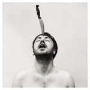

Quick Takes (January 2016)
In spite of the usual lull of a new year, this January, in particular, was jam-packed with loads of exciting releases that cover a whole gamut of styles and attitudes. Sometimes we just don't have the time and resources to cover them all, but that doesn't mean we're always listening. Below are some records that just couldn't be left ignored.
...
 Bloc Party
Bloc Party
Hymns
(Vagrant/BMG/Infectious)
Bloc Party are taking quite the commendable approach with their fifth full-length Hymns, one that intends to erase the much-beloved angst of their early albums in favor of a newfound spiritual ideology. This isn’t to say that Bloc Party should go back to the exhilarating Silent Alarm. Artists should allow themselves for some necessary reinvention; the problem with Hymns is that it chugs along with a series of stilted niceties that lack any kind of rhythm or emotion. The Love Within and Virtue revisit the indie-disco hybrid of their past two records, trying to supplement an assortment of tired studio effects to compensate for the band’s lack of chemistry. It’s quite apparent that singer Kele Okereke is trying to rid himself from past quarrel, so to see him embrace a more grounded and benevolent persona works to his personal betterment, though he should further consider if music is necessarily the more appropriate platform to express it. [4/10] Juan Edgardo Rodríguez
 Charlie Hilton
Charlie Hilton
Palana
(Captured Tracks)
As part of dream pop outfit Blouse, Charlie Hilton crafted stiffly-danceable tunes that took a more cerebral form of electro-pop. Hilton wasn’t the most striking vocalist, which suited the duo’s hazy confections, though her first solo outing almost demands Hilton to step out of her shell to embody the French chanteuse that lives within her. Which shouldn’t be that much of a challenge - throughout Palana, Hilton expertly forces that listless droll like some bored fashionista, while other times she struggles to find a vocal compromise between Julia Holter and Trish Keenan. Hilton tries to be many things, oftentimes all at once, though sometimes it works: the jaunty new wave of Pony is relentlessly chirpy, while Long Goodbye is a spacey, reimagined take on Brill-Building pop. All while trying to assume this brooding, lonely gaze, lost in a sonic fog even when the stars are surely aligned to her favor. [6/10] Juan Edgardo Rodríguez
Chairlift
MOTH
(Columbia)
MOTH is Chairlift’s third LP, and it is their most confident sound to date. Caroline Polachek’s razor-sharp falsetto shines throughout, and is an open-ended contradiction to the gelatinous production work of Patrick Wimberly, giving the songs a mellow congeniality that allows the duo to seamlessly note their reflections in a self-assured manner. The album drops its anchor in the clearest of pop waters, but is able to easily make transitions from arty R&B, funk-bass driven soul music and the sort of groove laden, 80s-indebted dancefloor bangers that ooze poise and probity. There is an alluring skewness to highlights such as Polymorphing and Show U Off, whilst Moth to the Flame is a metaphor to the album itself: spilling how the irresistibility of something can ultimately be the thing that destroys you. All in all, the result of Chairlift dabbling in the mainstream pop archetype is the duo’s best and most cohesive album to date. [8/10] Carl Purvis
 Conrad Keely
Conrad Keely
Original Machines
(Superball Music)
This one hurts. As the creative force behind …And You Will Know Us By the Trail of Dead, Conrad Keely has sculpted prog-rock fantasies and strident hardcore into elegant noise. It’s the stubborn artiste in him that continues to find polarizing distinctions that shouldn’t, in theory, quite mesh, so why not take the solo route and try to accomplish everything at once. As you’d maybe expect, Original Machines is strictly fan-service; well, for the kind that doesn’t mind Witch’s Web over Homage, at least. It’s an hour-long look into the CD format’s past, when artists like Sebadoh and Guided by Voices could cram in a plethora of short, hook-driven songs even when the sequencing was patchy. Except that Conrad’s strategic intentions get the best of him, swerving between unmemorable mid-tempo cuts and stodgy piano playing with the occasional flashes of unfulfilled brilliance. [5/10] Juan Edgardo Rodríguez
 Fat White Family
Fat White Family
Songs for Our Mothers
(Fat Possum)
The Family’s second LP was an opportunity to override their reputation for acting insane both on and off the stage with music. Their madness has undoubtedly been the keystone of their connection to their audience since their formation, but they don’t just test the boundaries of what’s tasteful and what’s just downright offensive, they arrogantly stroll over it and spit in the face of anyone who has an issue with them doing so. Songs for Our Mothers isn’t as musically disgusting as some of the themes covered suggest it should be. In some instances, the juxtaposition of horrific subject matter with calculated soundscapes is ominously unsettling, but for the most part just bores you to tears. It tethers itself loosely to a lo-fi rock template, with reverbed, distorted guitars and a ghoulish vocal delivery, but there’s an ecclesiastical overtone that makes it all the more disconcerting. From referencing Harold Shipman in a song title to taking a moral high ground to the view of secluding yourself with drugs, Songs for Our Mothers presents an insignificant manifesto. [3/10] Carl Purvis
MONEY
Suicide Songs
(Bella Union)
Manchester miserabilists MONEY sure know how to write a life-affirming song even when they're shrouded in dark dread. The lush strings belie the downtrodden nature of singer Jamie Lee, whose quivering yelp makes it all sound as if he’s in the verge of some cathartic breakdown. But the multifaceted Suicide Songs manages to surprise and reward with some of their most accomplished work yet: from the lingering psychedelia of Night Came to the affecting crawl of I’ll Be the Night, MONEY’s overly-introspective musings are the perfect match for the song’s atmospheric, though never bombastic anthems. Suicide Songs juggles anguish and optimism in equal measure, somehow mournful and triumphant in search for some kind of personal salvation. Their Mancunian progenitors Elbow would be proud. [8/10] Juan Edgardo Rodríguez
 Mystery Jets
Mystery Jets
Curve of the Earth
(Caroline International)
Even ten years after their debut, it’s hard to think about Mystery Jets without thinking about their sketchy portraits of young love. Their hazy, amiable delivery and tangled guitars allowed them to stand out from a plethora of rank average British indie bands that were sharpening their chops at the same time, but now they’re a completely different band. Curve of the Earth takes on a more progressive stance than we’ve seen from the band in the past, channeling the prog of King Crimson and Syd Barrett-era Pink Floyd into a distinct but still relatively accessible sound. The only trouble is that it’s very difficult to stay engaged with the album. Its progression is too deliberate, as if every convoluted idea the band had in the writing process was crammed in just to avoid it going unheard. There are some very good moments – Taken By The Tide is brilliantly structured, whilst Bombay Blue is anchored by a solid groove and a handsome vocal. All in all, Curve of the Earth comes across a little on the self-indulgent side, and although most bands evolve and move on from past successes, over-complicating things can lead to that band losing their sense of character and identity. [5/10] Carl Purvis
 Pop. 1280
Pop. 1280
Paradise
(Sacred Bones)
Pop. 1280 were once unruly misanthropes with an appetite for scathing pandemonium, though throughout the years they’ve incorporated subtle hints of punctuated synth noise to their oftentimes in-the-red interplay. There’s a lot to absorb within their uncompromisingly hostile behavior, since their rackety, almost makeshift production goes straight for the guttural. Paradise is the closest they’ve come to separating themselves from sludgy noise rock, opting almost exclusively for an industrial-sounding squall that further fleshes their droning atonal passages. It’s as if they decided to ditch the use of guitars altogether, utilizing sooty, piercing synths more prominently into songs that veer into thick, cathartic goth (Chromedia) or synthetic EBM (Rain Song). Pop. 1280 are still concerned with the dark underbelly of the human experience, though the sneakily measured Paradise proves that even the most degenerate souls deserve some sanguine aggression, too. [7/10] Juan Edgardo Rodríguez
 Sia
Sia
This Is Acting
(RCA)
By Sia Furler’s own admission, This Is Acting is an array of songs written for other artists that just didn’t quite cut the mustard for their intended targets. As a result, it’s an album that is a reconstruction of something that never existed as a single entity in the first place. The songs are pop gold, showcasing Sia’s gigantic voice and songwriting prowess, and would probably all win Eurovision with a succession of ‘douze points.’ The songs do undoubtedly miss a personal aspect, and in that sense the finished product doesn’t always feel like an album, but these songs were never supposed to be personal. In fact, listening to This Is Acting is more like listening to a compilation album. Either way, it’s a fascinating insight into how pop music is written, and how very few writers are responsible for the swathes of it in the charts. Whilst listening to it, you can actually hazard pretty good guesses as to who each song was originally written for. Every track is a potential hit, and Sia’s use of pure pop hooks, coupled with an astounding control over her rampant voice, makes this a very good record. [7/10] Carl Purvis
Tricky
Tricky Presents Skilled Mechanics
(False Idols)
Skilled Mechanics is the new project of Tricky, and it is one that sees him adopt a more synergetic way of producing a record. Along with DJ Milo and Luke Harris, Adrian Thaws has put together a record of perfectly executed, baroscopic beats, and the result is that we just may have a Tricky record that can be talked about in the same breath as his 21-year-old debut. The mood smolders from start to finish, and with only two of the album’s thirteen tracks running for more than three minutes, each track is sharp and incisive. With any Tricky record, guest vocalists are going to be commonplace, and his nous for finding the most suitable voice for his precise mindset is hugely evident. The vocals on opening track I’m Not Going come from Danish singer Oh Land, and the embers peel from her voice to intensify intoxicating fumes. Chinese rapper Ivy brings a stinging attitude to warping track Beijing to Berlin, and Francesca Belamonte’s exposed, cutting tones make full use of the album’s shortest track, We Begin. Skilled Mechanics is an intelligent, pertinent piece of work that shows just how fresh the ideas of Thaws remain. [8/10] Carl Purvis